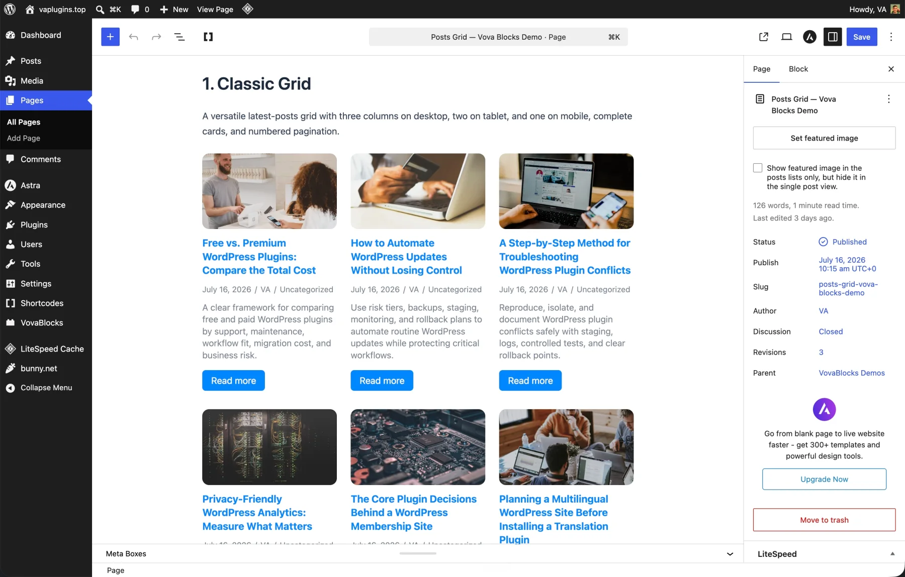
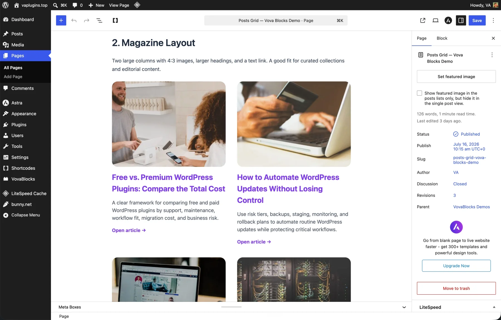
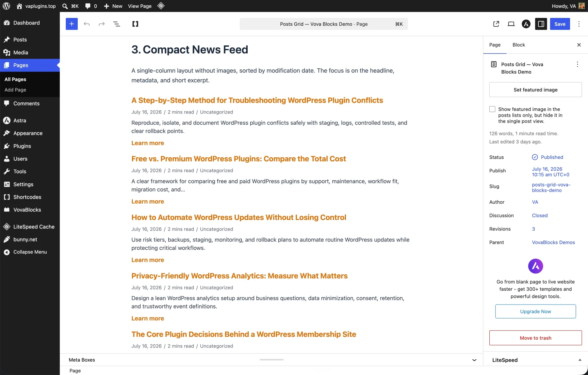
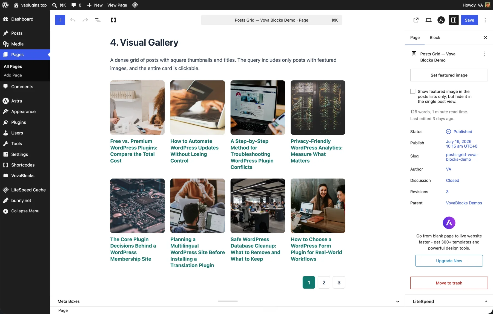

Native Gutenberg block
Build a post grid that plays by your rules.
Flexible queries, responsive layouts, complete card controls, and smooth AJAX pagination—right inside the WordPress editor.
- WordPress 6.5+
- PHP 7.4+
- GPL-licensed
Yes, really.
Everything included.
No Pro tier.
Every query, layout, and card control is yours from day one. No trial, no upgrade pitch, no account to create.
- $0complete plugin
- Noexternal service
- GPLuse it commercially
- Allfeatures included
Proof, not promises.
One block.
Many personalities.
Classic grids, editorial layouts, compact feeds, and visual galleries—all built with the same native block.




Fine-tune it without touching code.
Good questions.
Short answers.
No fine print.
Which content can the block display?
Any public post type and its public taxonomies, or a hand-picked list of specific posts.
Does pagination reload the whole page?
No. Vova’s Post Grids loads the selected page through the WordPress REST API and updates the grid in place.
Can the layout adapt to different screens?
Yes. Desktop, tablet, and mobile columns can be configured independently, along with horizontal and vertical spacing.
Does it connect to an external service?
No. The plugin works with content and APIs provided by the WordPress site where it is installed.
Can I use it on a commercial website?
Yes. Vova’s Post Grids uses the GPL-2.0-or-later license and is free to use, study, modify, and share.